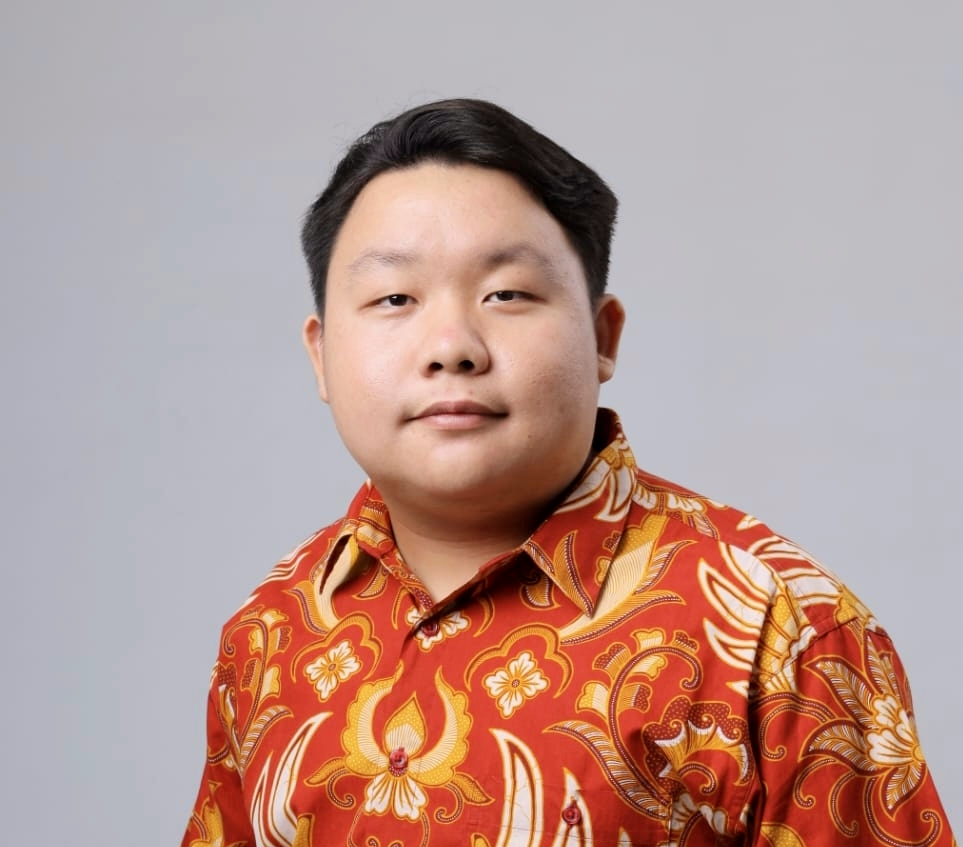

Skinning-AI
Group project · Model trainer, backend
An AI-powered web application that integrates machine learning to detect and classify external skin diseases for diagnostic education.
PORTFOLIO
Computer Science student at Bina Nusantara University Alam Sutera| AI Track | Frontend Development & Machine Learning

Tangerang, Banten, Indonesia
About
I’m a Computer Science student at BINUS University with a strong focus on front-end development and machine learning. I love bringing ideas to life in the browser, and I’m just as excited about building models that make those experiences smarter. Recently, I’ve been combining the two by building web applications powered by image classification and sentiment analysis, while continuously refining my UI/UX skills. I’m always eager to tackle new design and modeling challenges, and I’m looking for internships and project collaborations where I can grow in both areas.
Through coursework and team projects, I’ve built frontend and backend applications, shaped user flows, and explored practical product thinking from both a technical and design perspective.
I also work with tools such as Python, Flask, OpenCV, TensorFlow, scikit-learn, HTML/CSS/JS, PHP & MySQL, and Streamlit as I continue to build my portfolio in both software and AI.
Capabilities
An AI-powered web application that integrates machine learning to detect and classify external skin diseases for diagnostic education.
A computer vision system that leverages the MOG2 background subtraction algorithm to efficiently detect and track moving vehicles in video streams.
A comparative study of Naive Bayes, Logistic Regression, and DistilBERT for Bitcoin tweet sentiment analysis with a Streamlit prediction app.
A volunteering platform prototype connecting event organizers with volunteers while helping students track their community service hours.
A comprehensive travel information system built to streamline route searching, destination browsing, and overall trip planning.